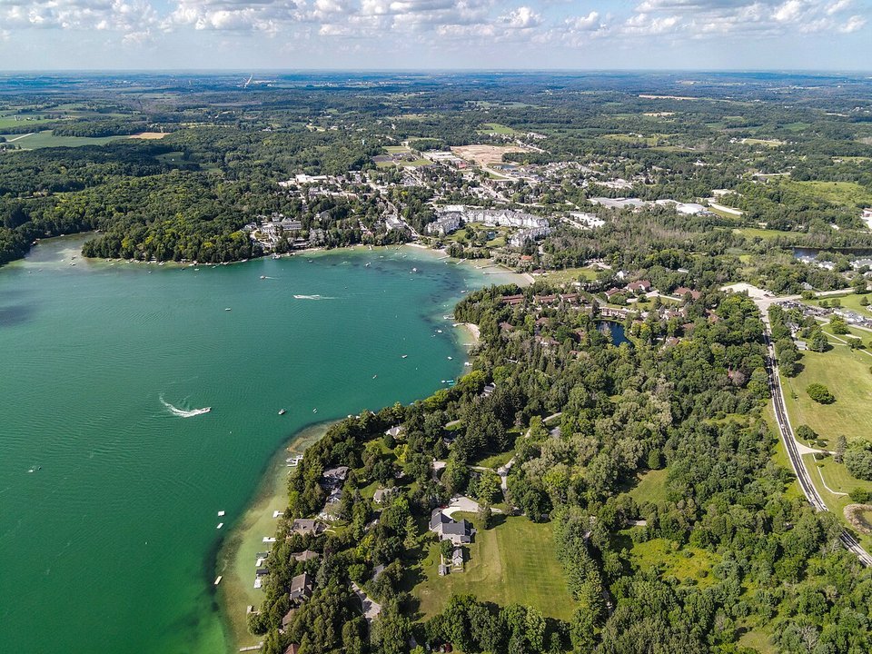

Lakefront · Resort & spa
The Osthoff Resort
A lakeside resort with Aspira Spa and a cooking school.
Official details for The Osthoff ResortA clear spring-fed lake, a grand resort and a famous racetrack.
Elkhart Lake has drawn vacationers since the 1800s for its clear, spring-fed water. Stay at the Osthoff Resort and book its spa, take a cooking class, swim off the village beach, watch a race at Road America, and have a drink at the historic tavern at Siebkens.

Time illustration: direct distance at 150 KTAS plus 15 minutes for departure and arrival, matching the discovery page. Use ForeFlight for your actual flight plan.
KSBM, Sheboygan County Memorial, is a non-towered field about 20 minutes from Elkhart Lake.
Sheboygan County Memorial Airport, Sheboygan Falls, WI
Confirm FBO hours, fees and ground transportation. No live fuel price is shown.
Great Lakes weather: lake-effect clouds and snow from late fall through winter, summer thunderstorms and fog over cold water in spring. About 740 nm from Myrtle Beach: plan a fuel stop and three nights.
Rates and availability need travel dates. Race weekends at Road America fill every room.
A lakeside resort with Aspira Spa and a cooking school.
Official details for The Osthoff ResortA summer resort since 1916, with the famous Stop-Inn Tavern.
Official details for Siebkens ResortReserve weekend dinners.
The Osthoff’s lakeside restaurant.
Official details for Lola’s on the LakeA casual village restaurant.
Official details for Off the RailA racing-history tavern since the 1950s road races.
Official details for Siebkens Stop-Inn TavernSlow lake days with one big outing.
A full-service spa with couples treatments overlooking the lake.
Booking: Ask about couples treatments, access for non-guests, current pricing and cancellation policy. No prices are shown here, and no appointment has been booked.
This prototype links to the local visitor site. It does not yet match events to your travel dates.
Road America’s big weekends; book early.
Road America for Race seasonSwimming and boating.
A holiday market at the Osthoff.
Osthoff for Old World Christmas MarketCheck the local calendar when choosing a weekend, and confirm dates and tickets with the organizer.
A sample long weekend: spa, lake and a race. Plan three nights for the flight. No bookings or availability confirmed.
Land at KSBM early.
Swim at the village beach.
Lunch at Off the Rail, then back to the airport.
Land at KSBM, subject to weather, your fuel stop and your actual flight plan.
Check in and swim at the beach.
Dinner at Lola’s on the Lake.
Aspira Spa.
Road America or the Kettle Moraine.
Drinks at Siebkens.
A lake walk and breakfast.
Allow time at the airport.
Lake-effect weather can build quickly; leave early.
Aspira Spa.
Road America.
Dinner at Lola’s on the Lake.
These details make the difference between an appealing list and a usable getaway.
Lodging first; check the race calendar.
About 735 nm. Plan a fuel stop and three nights.
Kohler is 20 minutes away.
June to September.
Picks and links reviewed by WingAway Weekends. Hours, prices, menus and availability change often, so confirm directly with each place before booking. Spotted something out of date, or have a favorite we missed? Email us at hello@wingawayweekends.com.
WingAway Weekends helps you discover the destination. Use ForeFlight and current official aviation information for route, performance, weather, NOTAMs and preflight decisions. Flight planning and PIC responsibility stay with the pilot.
One fly-in weekend, a Fly to Lunch pick and the newest guides, about once a month.
Free. Unsubscribe anytime.